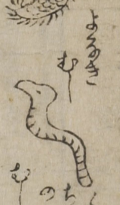

病気；ビョウキ，虫；ムシ，夜泣き；ヨナキ

夜泣き虫。ミミズのように細長い形状をしており、口先が長く出ている。
出典：親書誌：U426_nichibunken_0017：セメンエン；セメンエン／日付：2006／資源識別子：U426_nichibunken_0017_0005_0000
Copyright (c)2010- International Research Center for Japanese Studies, Kyoto, Japan. All rights reserved.